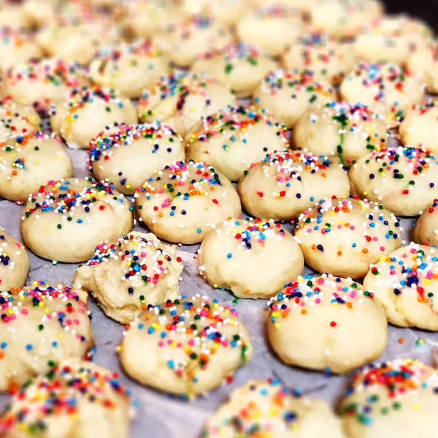

Ricotta Cookie
These Italian ricotta cookies with an almond-flavored glaze and colorful candy sprinkles are very good!
Ingredients
- Ricotta:Of course, you'll need ricotta! A 15-ounce package to be exact.
- Sugar:You'll need two types of sugar: white sugar for the dough, confectioners' sugar for the glaze.
- Butter:Two sticks of butter add moisture and richness.
- Eggs:Eggs lend moisture and act as a binder, which means they help hold the dough together.
- Extracts:Vanilla extract goes into the dough, while almond extract goes into the sugary glaze.
- Flour:All-purpose flour gives the cookies structure. Plus, they help the dough come together.
- Leaveners:Baking soda and baking powder act as leaveners, which mean they help the cookies rise:
- Milk:Stir 5 tablespoons of milk into the glaze to create the perfect spreadable consistency.
- Sprinkles:These Italian ricotta cookies are traditionally topped with colorful sprinkles.
Steps
- Make the dough:Beat the wet ingredients in a bowl. In a separate bowl, mix the dry ingredients. Gradually stir the dry mixture into the wet ingredients.
- Bake the cookies:Roll the dough into balls and bake in the preheated oven until the edges are golden.
- Glaze the cookies:Mix the glaze ingredients together until well-combined. Spoon over the warm cookies and top with sprinkles.